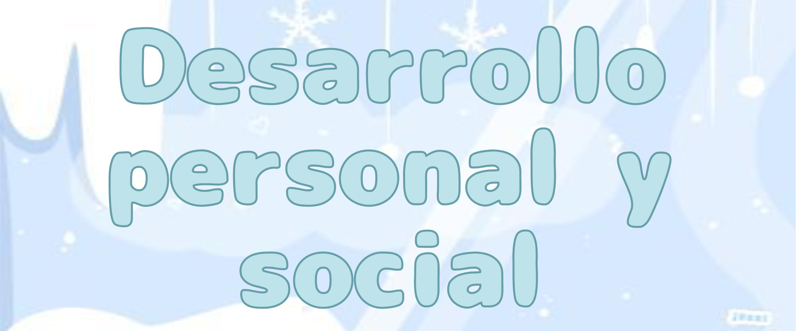

El desarrollo personal y social es fundamental para el bienestar del ser humano. Este proceso abarca aspectos emocionales, cognitivos y sociales que se van construyendo a lo largo de toda la vida.
El desarrollo personal es un proceso interior que refleja el movimiento necesario para recorrer la distancia que separa el estado actual de ese horizonte deseado. Un horizonte de aprendizaje por medio de la consecución de nuevos objetivos de autoestima, inteligencia emocional, motivación o superación de dificultades.
❀Evolución personal
De este modo, una persona puede proyectar su imagen en el espejo de la vida desde una visión de crecimiento definida por la evolución. Si echas la vista al pasado podrás observar este recorrido vital por medio de tu propia historia.
El desarrollo personal es ese potencial que conecta con el rol protagonista que cada persona debe asumir en su propia vida.
❀Autoconocimiento
Así como cuando inicias un lazo de amistad con otra persona compartes momentos de conversación para descubrir intereses comunes y conocer al otro como otro, en el viaje de la introspección adoptas un posicionamiento en el que te concedes la importancia que mereces en tu vida. Este autoconocimiento personal te ayuda a saber quién eres y a recordarlo con más frecuencia.
❀Libertad
La libertad es una capacidad que se manifiesta en la toma de decisiones. El desarrollo personal es inseparable de esta capacidad. Sin embargo, a veces ocurre que la persona se siente determinada por las circunstancias externas y necesita recordar que siempre puede influir en lo exterior a través de su poder interior: su actitud.
❀Presencia consciente
Es posible l౨legar al pasado o al futuro por medio del recuerdo o la anticipación, sin embargo, es fundamental que estas experiencias sean temporales y tengan un punto de retorno para aterrizar en el presente. El desarrollo personal está ligado con la presencia consciente porque solo en ese tiempo es posible generar cambios con sentido (nadie puede modificar el pasado ni puede predecir el futuro en todos los detalles).
❀Búsqueda de la alegría
Existen emociones agradables y desagradables. La alegría manifiesta un estado de ánimo marcado por la vitalidad y la energía positiva. El desarrollo personal da espacio a todas las emociones y sentimientos. De hecho, es importante no juzgar una emoción. Tienes derecho de sentirte como te sientes en torno a un asunto determinado. Pero la búsqueda de la alegría es la meta de autoamor que te recuerda que mereces ser feliz a pesar de todo.
⋆｡‧˚ʚ Qué es el desarrollo social ɞ˚‧｡⋆
El desarrollo y la evolución no solo puede observarse de manera individual, sino también, en su perspectiva grupal. En ese caso, el desarrollo social remite al progreso humano visto como un todo. Es decir, a la búsqueda del bien común. De este modo, el progreso social nutre el propio potencial de desarrollo individual ya que quien forma parte de una sociedad que promueve valores, recursos y medios orientados a afianzar la felicidad de sus protagonistas, dispone de oportunidades a las que tal vez no tendría acceso en otras condiciones.
El desarrollo social parte de la búsqueda de igualdad de oportunidades, de la aplicación del humanismo y los valores centrados en la práctica del bien, de la promoción de la salud como principio de bienestar, de la creación de empleo de calidad, del acceso a la cultura, del cuidado de la naturaleza y de la integración social.
⋆.˚✮ Reflexiones sobre qué es el desarrollo personal y social ✮˚.⋆
╰┈➤ Por tanto, desarrollo social e individual se retroalimentan constantemente puesto que el avance de una comunidad es más fuerte cuando se pone en el centro a la persona y se respetan sus necesidades, derechos y libertades.
╰┈➤ El desarrollo personal y social es una experiencia de evolución, progreso y crecimiento que te implica como protagonista en aquellas acciones que dependen de ti.

﹒⌗﹒¿Por qué es importante el desarrollo personal y social?﹒౨ৎ˚₊‧


El desarrollo personal y social es esencial para el bienestar emocional y psicológico de un individuo. Este proceso permite a las personas comprender sus propias emociones y sentimientos, desarrollar relaciones significativas con los demás y aprender a enfrentar los desafíos de la vida de manera efectiva.
Además, el desarrollo personal y social contribuye al bienestar físico y mental, mejora el desempeño académico y laboral y facilita la adaptación a nuevas situaciones y contextos.
El desarrollo personal se enfoca en el crecimiento individual, promoviendo la autoconciencia, la autoestima y la capacidad de tomar decisiones conscientes. El desarrollo social, por otro lado, se centra en la capacidad de interactuar positivamente con los demás, construir relaciones saludables y contribuir al bienestar de la comunidad.
Beneficios del desarrollo personal y social:
౨ৎ Autoconciencia y autoestima:
El desarrollo personal ayuda a comprender mejor tus fortalezas y debilidades, lo que a su vez fortalece tu autoestima.
౨ৎ Relaciones saludables:
Tanto el desarrollo personal como el social fomentan la comunicación efectiva y la empatía, promoviendo relaciones interpersonales positivas y duraderas.
౨ৎ Bienestar emocional:
Gestionar las emociones de manera saludable y construir redes de apoyo son componentes esenciales del desarrollo personal y social, que contribuyen a un mayor bienestar emocional.
౨ৎ Resiliencia y adaptación:
El desarrollo de habilidades para enfrentar los desafíos y cambios de la vida de manera resiliente es un resultado clave del desarrollo personal y social.
౨ৎ Contribución a la comunidad:
El desarrollo social fomenta la conciencia social y la participación ciudadana, lo que contribuye a una sociedad más justa y equitativa.
En resumen, el desarrollo personal y social son procesos continuos que requieren esfuerzo y compromiso, pero que a largo plazo tienen un impacto significativo en la calidad de vida de las personas y en el bienestar de la sociedad en general.
︶ ⏝ ︶୨୧︶ ⏝ ︶︶ ⏝ ︶︶ ⏝ ︶ ୨୧ ︶ ⏝ ︶︶ ⏝ ︶︶ ⏝ ︶୨୧︶ ⏝ ︶